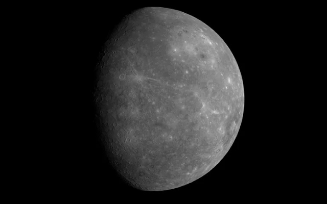
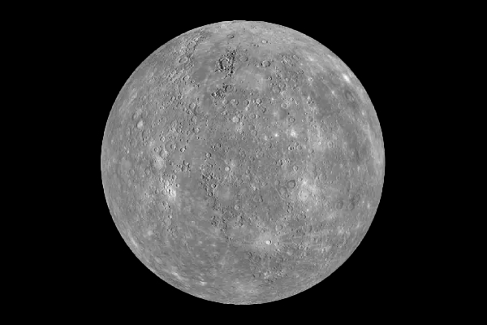
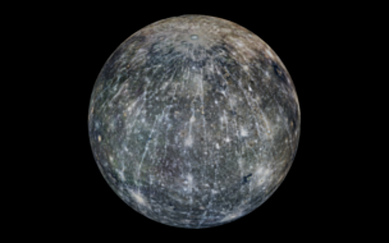

Mercury
Mercury is the first planet from the Sun, and also the smallest within our Solar System
Information

| Property | Value |
|---|---|
| Mass (1024 kg) | 0.33010 |
| Volume (1010 km3) | 6.083 |
| Mean Density (kg/m3) | 5429 |
| Surface Area | 74.8 million km2 |
| Average Temperature | 440 K (167 C) |
| Wind Speeds | N/A |
About Mercury


Mercury is the first planet from the Sun, and also the smallest. It is classified as a terrestrial planet, being one of the four within our Solar System, meaning it is characterised by a solid surface and composed of silicate rocks and metals. The surface of Mercury is heavily cratered; this is as a result of billions of years worth of impact events. The largest crater is named Caloris Planitia—and it has a diamater of 1,550km (or 960 miles)—approximately one third of the diameter of the planet.